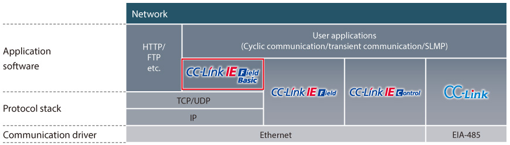

Network-related products |
Programmable Controllers MELSEC
CC-Link IE Field Basic Product Features

Combining with TCP/IP communications
- Configure more flexible system
- Setup/monitor from enterprise level computer or tablet computer
Highly flexible system can be configured combining with TCP/IP communications
The network operates on the standard Ethernet protocol stack, which can be used together with TCP/IP communications. This feature allows CC-Link IE Field Network Basic compatible products and Ethernet compatible products to be connected on the same Ethernet communications line, enabling a highly-flexible and low cost system. By enabling cyclic communication control on standard Ethernet, parameter setting and status monitoring can be done with peripheral devices (such as an enterprise level or tablet computer) connected via TCP/IP communications.
